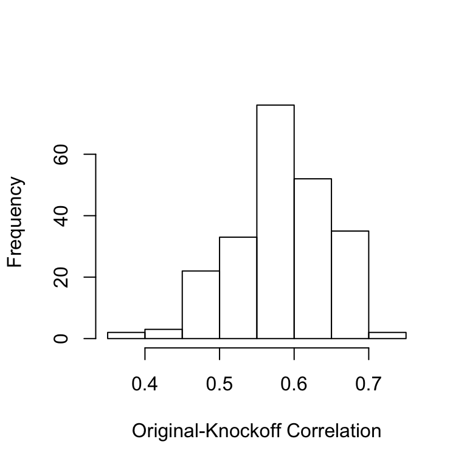
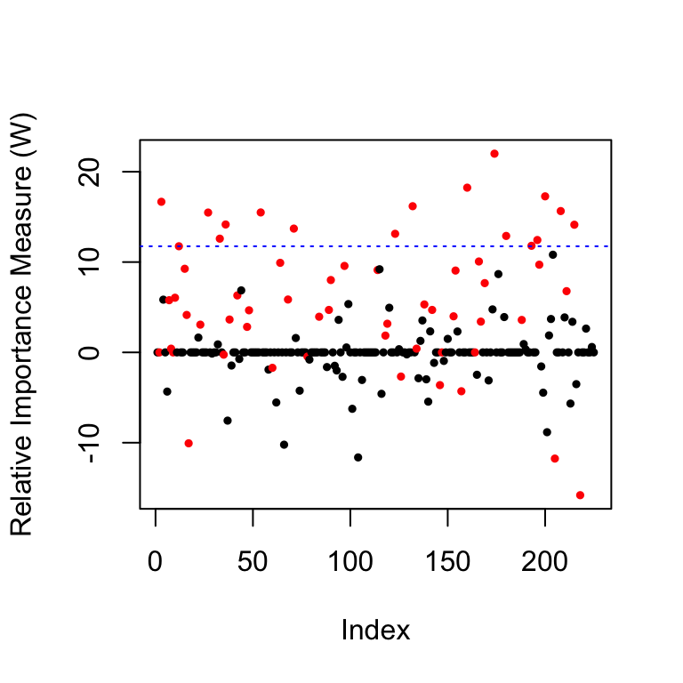
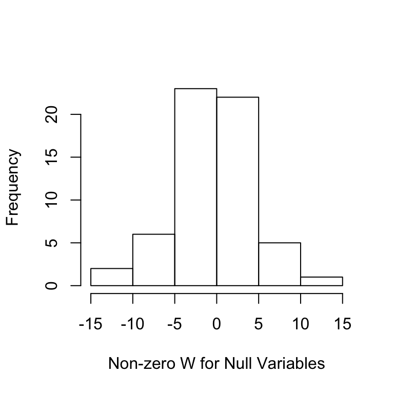

This page shows examples of conditional knockoffs for discrete graphical models as in Section 3.3 of the accompanying paper.
library(knockoff)
library(SNPknock)
source('src/knockoff_measure.R')
source('src/util.R')In this simulation we assume the distribution of the covariates belongs to the family of all binary Markov chains (note we do not assume stationarity).
First, we set up the experiment by randomly drawing the inital probability \(\mathbf{P}(X_1)\) and the transition matrices \(\mathbf{P}(X_j \mid X_{j-1})\), for \(j>1\).
source('src/cknock_dgm.R')
set.seed(2019)
# Problem parameters
p = 1000 # number of covariates
n = 350 # number of observations
k = 60 # number of non-zero regression coefficients
K = 2 # number of states
A = 25 # signal amptitude
nonzero = sample(p, k)
beta = 1 * (1:p %in% nonzero) * sample(c(-1,1),p,rep = T)
# Initalial probability
pInit = c(1/2,1/2)
# Create p-1 transition matrices
stickiness = 0.4
Q = array(stats::runif((p-1)*K*K),c(p-1,K,K))
for(j in 1:(p-1)) {
Q[j,,] = Q[j,,] + diag(rep(1,K)) * stickiness
Q[j,,] = Q[j,,] / rowSums(Q[j,,])
}Then we generate the covariates and response.
# Generate the covariate by a function in package `SNPknock`
X = SNPknock.models.sampleDMC(pInit, Q, n=n)
# Known graphical information: adjacent matrix
Graph=matrix(1,p,p)
Graph[abs(outer(1:p, 1:p, '-')) > 1] = 0
# a cut set
even.nodes=seq(1,p/2,by=1)*2
# Generate the response from a linear model
Y = X%*%beta*A/sqrt(n) + rnorm(n)The default choice for generating conditional knockoffs for discrete graphical models is Algorithm 7, which calls as a subroutine either Algorithm 5 or 6.
Xk.cond1=cknofkoff.DG.blocking(X, Graph,comps.ind = even.nodes) # Algorithm 7 & 5Xk.cond2=cknofkoff.MC.Enhanced.blocking(X, Graph,comps.ind = even.nodes, nFold=2) # # Algorithm 7 & 6Alternatively, one can also use either SCIP (Algorithm 13) or modified improved blocking (Algorithm 14) to generate conditional knockoffs for a Markov chain.
Xk.scip=cknofkoff.MC.SCIP.split(X , n0=8, K=2 ,sparse=T) # Algorithm 13
Xk.cond3=cknofkoff.MC.blocking(X) # Algorithm 7 & 15Once we have generated conditional knockoffs, all the usual knockoffs machinery applies.
fdr.level = 0.2
knockoff.stat.fun = mod.stat.lasso_coefdiff
filter.cond = knockoff.filter(X,Y,
knockoffs = function(x) {
Xk.cond2
},
statistic = knockoff.stat.fun,
fdr = fdr.level,offset = 1)
# false positive and false negative
c(fp(filter.cond$selected, beta),
fn(filter.cond$selected, beta))## [1] 0.1428571 0.8000000In this simulation we assume the distribution of the covariates is drawn from an Ising model \[ \frac{1}{Z_{\mathbf{\theta},\mathbf{h}}} \exp \left( \sum_{ (s,t)\in E} \theta_{s,t} x_s x_t +\sum_{s\in V} h_s x_s \right),\qquad \mathbf{x}\in \{-1,+1\}^{V}, \]
where \(V\) is the vertex set on a spatial lattice and \(E\) denotes the set of edges connecting the neighboring vertices, \(\mathbf{\theta}\) and \(\mathbf{h}\) are the model parameters, and \(Z_{\mathbf{\theta},\mathbf{h}}\) is the partition function. We first set up the experiment.
set.seed(2019)
# Problem parameters
width = 15 # the width of the 2D lattice
height = 15 # the height of the 2D lattice
p = width * height # number of covariates
Graph = SpatialGM(width,height)
Theta = 0.2 # equal entries
n = 200 # number of observations
k = 60 # number of non-zero regression coefficients
A = 20 # signal amptitude
nonzero = sample(p, k)
beta = 1 * (1:p %in% nonzero) * sample(c(-1,1),p,rep = T) Then we generate the covariates and response.
# Generate the covariate by Coupling from the past algorithm
X = c()
for( tt in 1: n){
newx = CFPT.Ising(width, temperature = 1 / Theta)
# CFPT.Ising() returns one covariate data point as a matrix
X = rbind(X, c(newx))
}
# Known graphical information: adjacent matrix
Graph = SpatialGM(width,height)
# a cut set given by bi-coloring
rownum = matrix(1:height, height, width, byrow = F)
colnum = matrix(1:width, height, width, byrow = T)
black.nodes = c( (rownum + colnum) %% 2 == 0)
# Generate the response from a linear model
Y = X%*%beta*A/sqrt(n) + rnorm(n)As with the Markov chain, we use Algorithm 7 to generate conditional knockoffs for the Ising model.
Xk.cond=cknofkoff.DG.blocking(X, Graph,comps.ind = which(black.nodes)) We can look at the histogram of the original-knockoff correlations for all the \(X_j\) to make sure they are not too high.
cor.ok=diag(cor(X,Xk.cond))
hist(cor.ok,main='',xlab='Original-Knockoff Correlation')
Once we have generated conditional knockoffs, all the usual knockoffs machinery applies.
fdr.level = 0.2
knockoff.stat.fun = mod.stat.lasso_coefdiff
filter.cond = knockoff.filter(X,Y,
knockoffs = function(x) {
Xk.cond
},
statistic = knockoff.stat.fun,
fdr = fdr.level,offset = 1)
# false positive and false negative
c(fp(filter.cond$selected, beta),
fn(filter.cond$selected, beta))## [1] 0.0000000 0.2833333As a diagnostic, we can look at the distribution of the \(W\) statistics. The first plot shows the \(W\) values for each variable as well as the threshold in blue, the second plot shows the histogram of the \(W\) statistics of the null variables, whose signs are mutually independently and evenly distributed on \(\{+1,-1\}\).
coloring=rep(1,p); coloring[nonzero]=2 # the color for the true non-zero locations of beta is red
plot(filter.cond$statistic,ylab='Relative Importance Measure (W)',
pch=19,col=coloring,cex=0.5) # plot the statistics used by the knockoff filter
abline(h = filter.cond$threshold, col = 'blue', lty = 3) # indicates the threshold
Ws = filter.cond$statistic[-nonzero];Ws = Ws[Ws != 0]
hist(Ws,main='',xlab='Non-zero W for Null Variables')